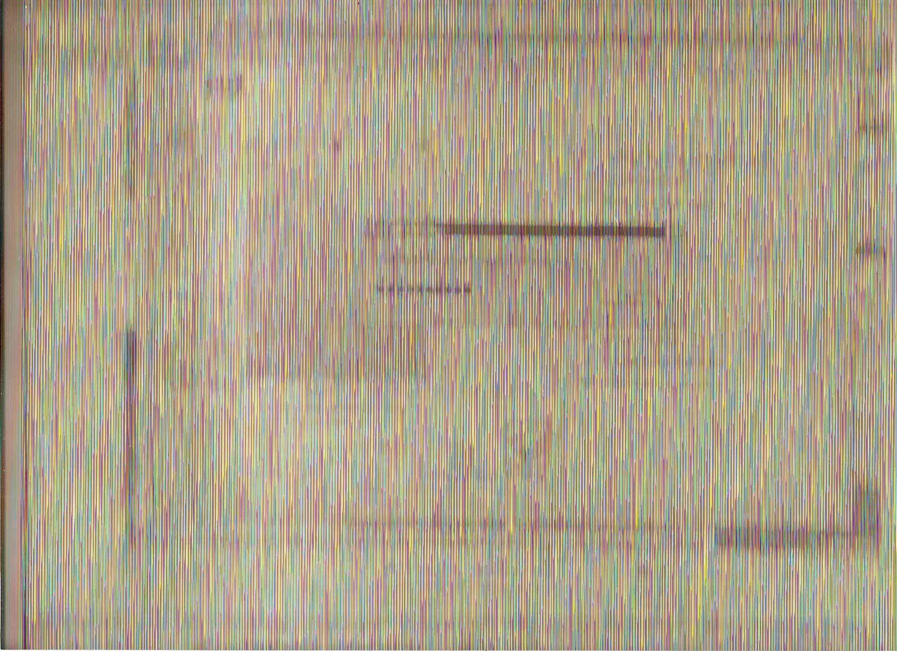
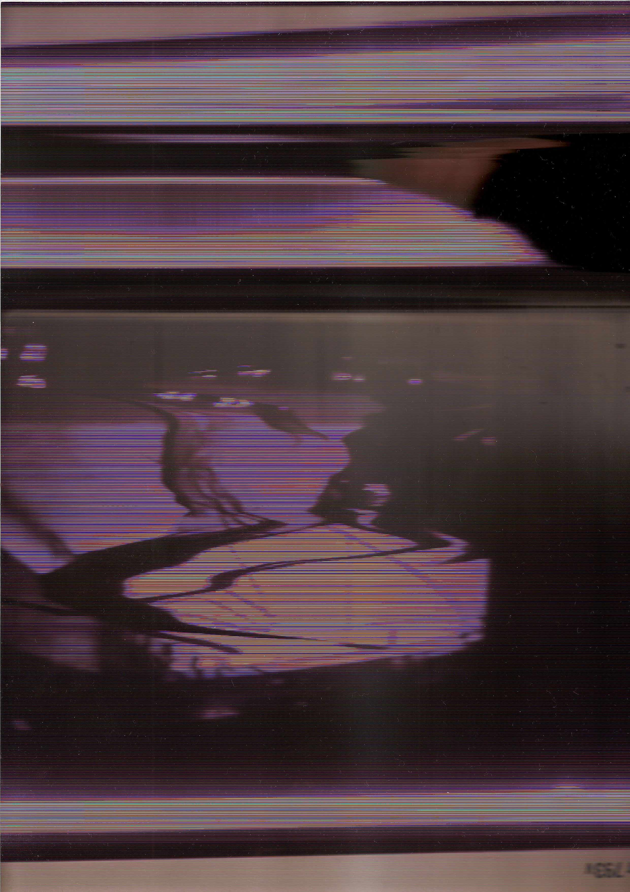
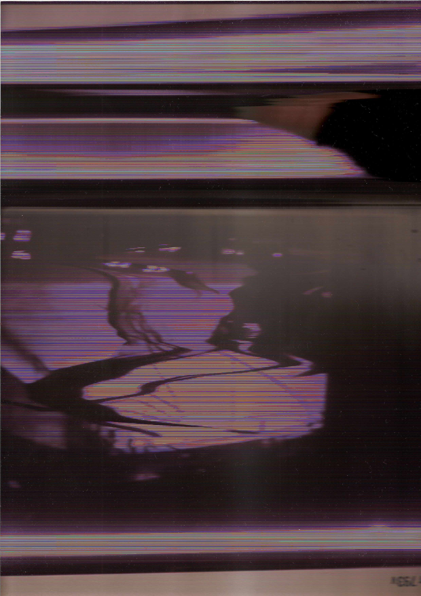
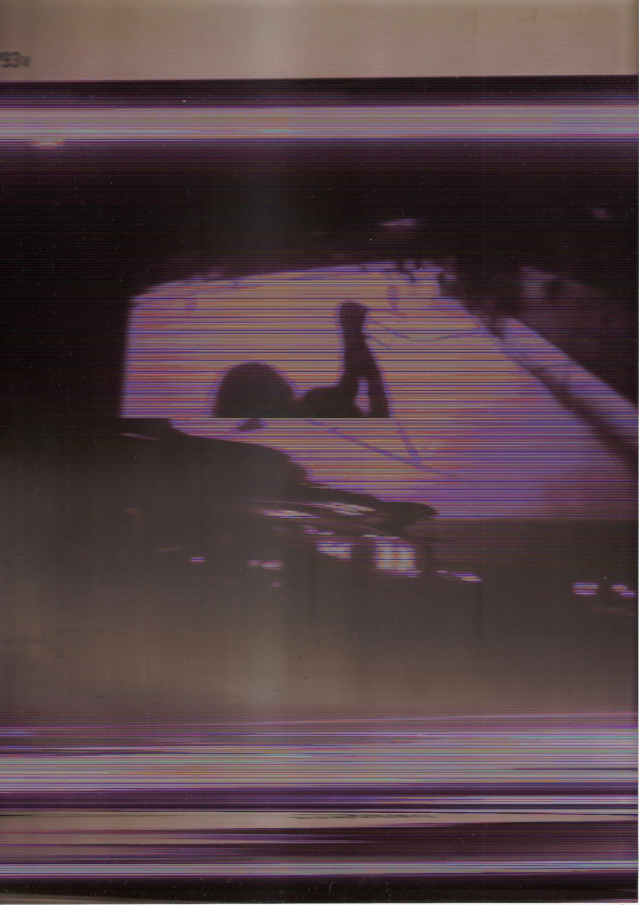
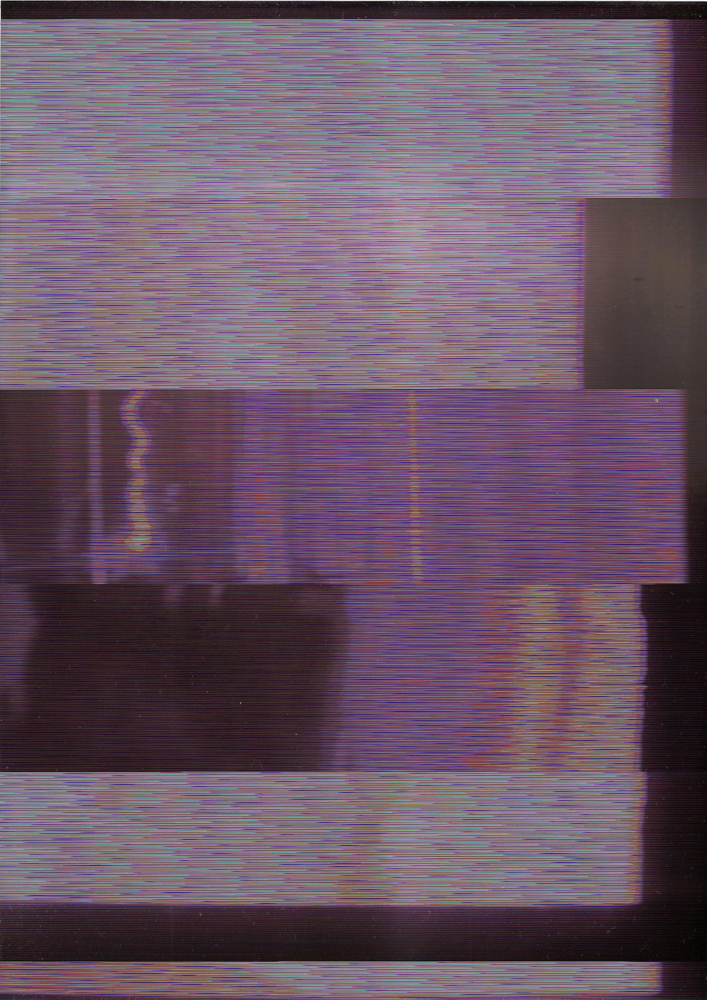
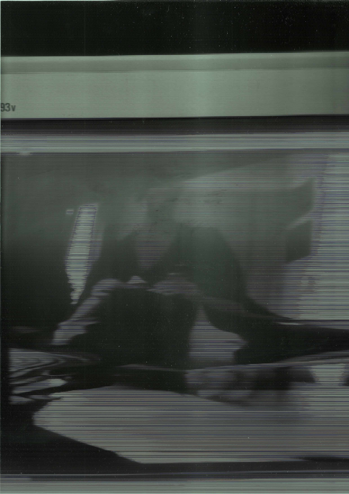
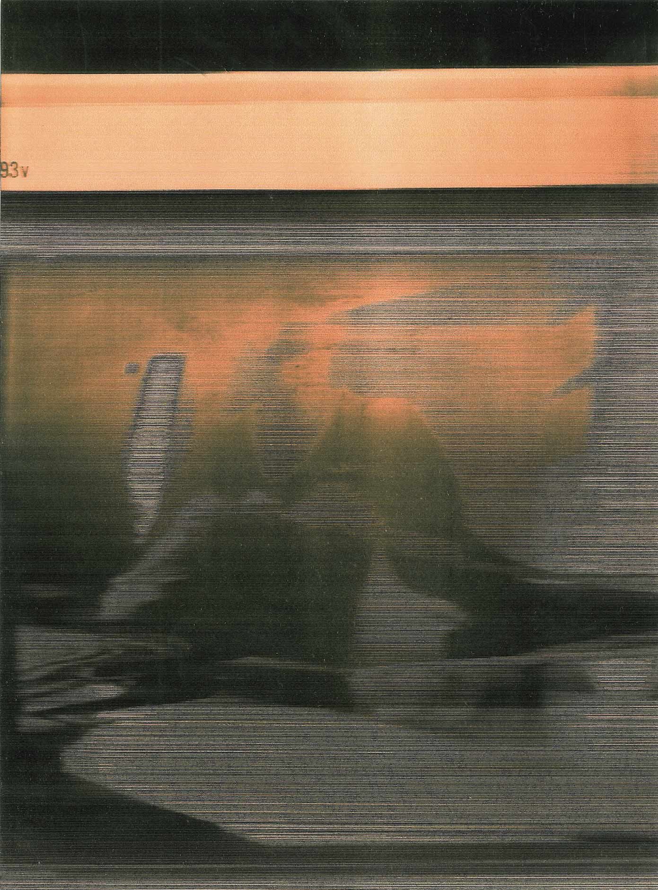
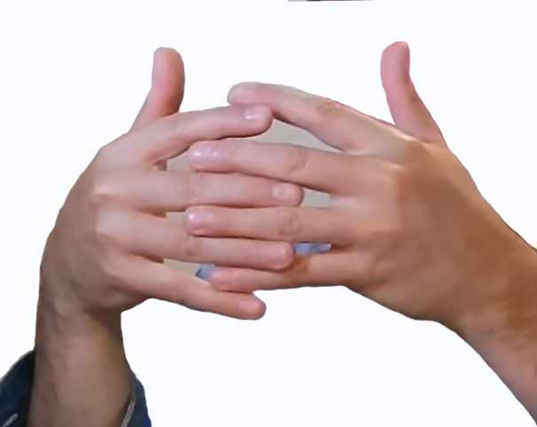
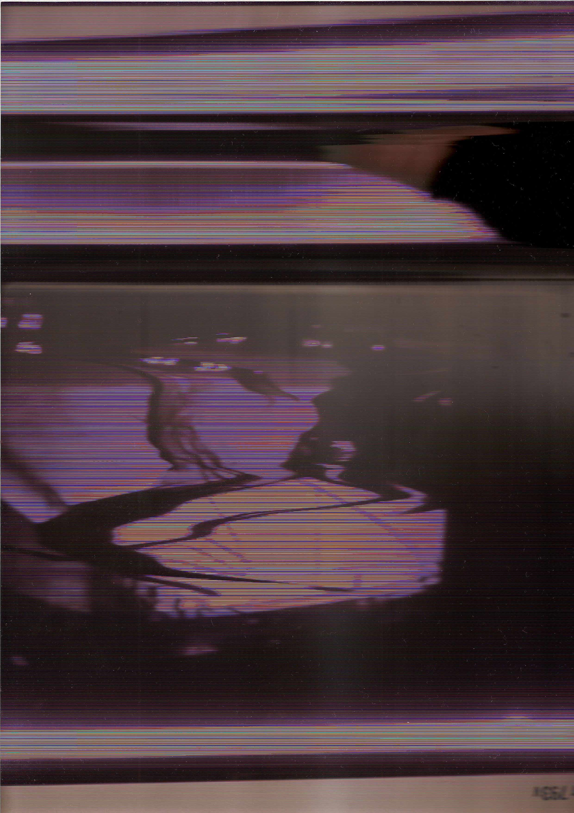

 
  
 

Experimental project inspired in the idea of feedback,
by placing the scanner lens in front of the computer screen,
first at the user interface of the software that visualizes
what is being scanned, then while a video is shown on the screen.
In this website, it's shown with the inspiration of the sstv,
to rethink how the scanner reads and writes an image.
